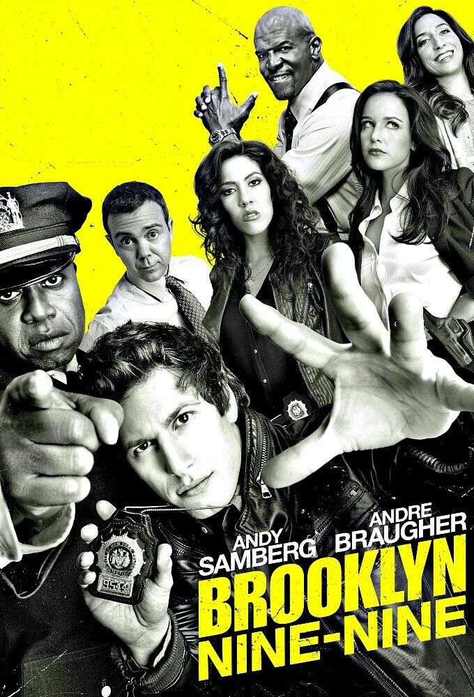
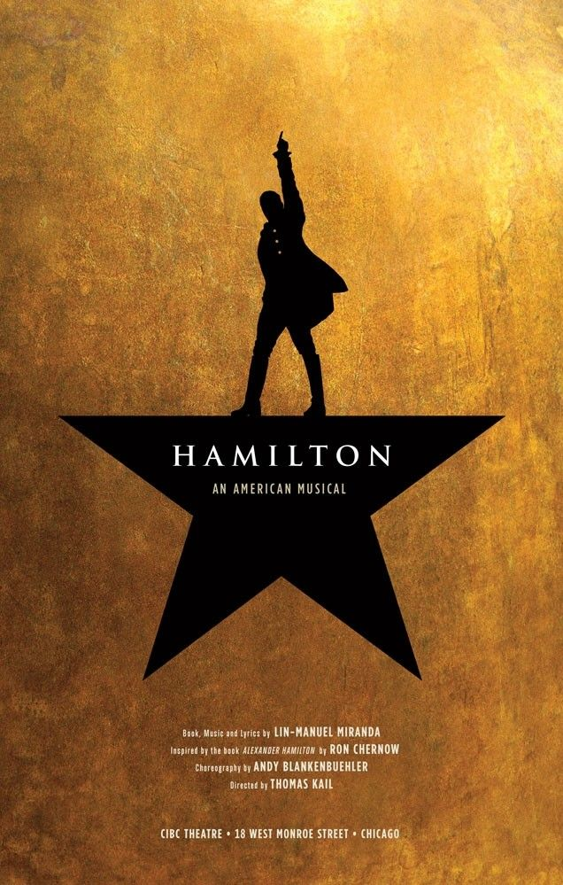
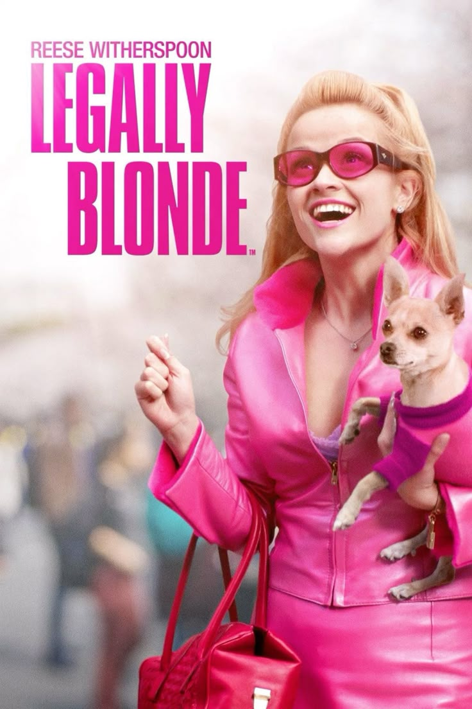
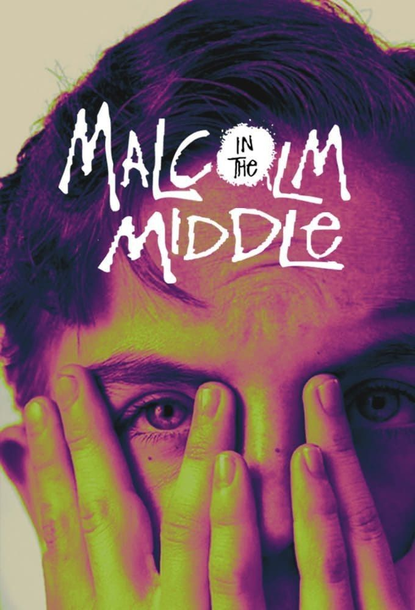
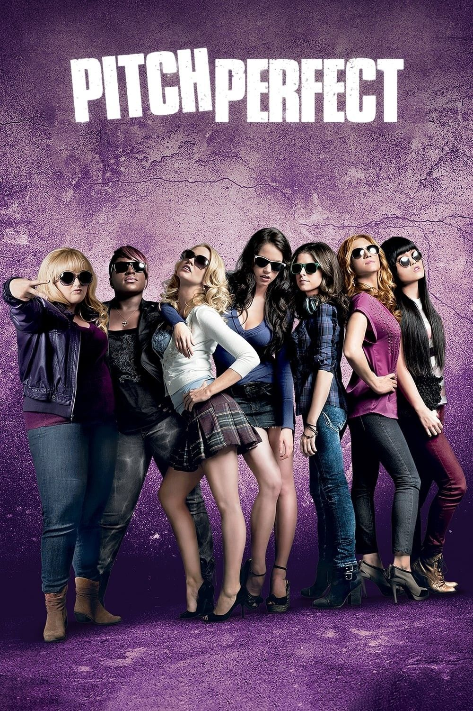
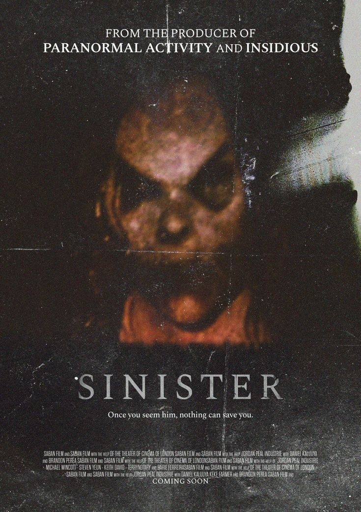
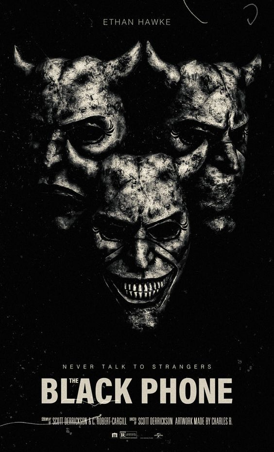
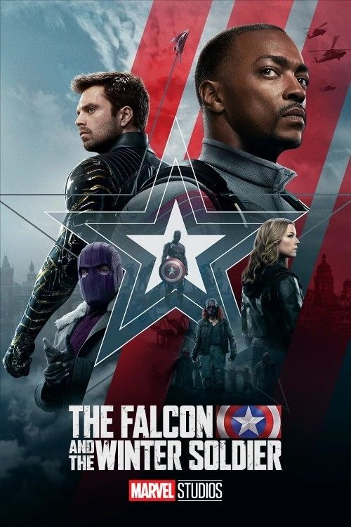
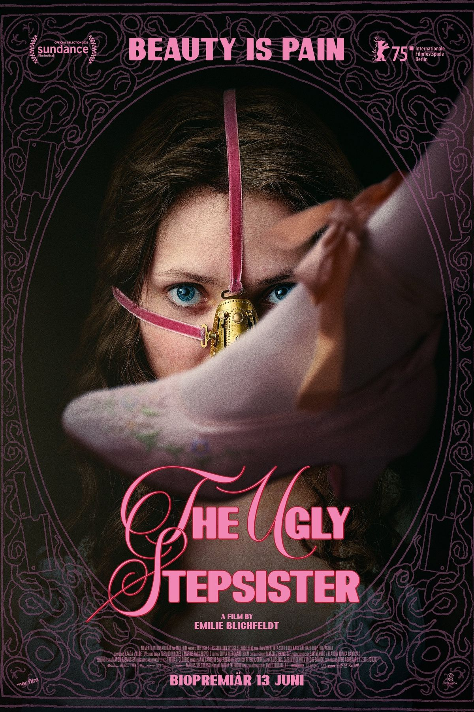

Amparo Arenzo
Hola! Soy Amparo Arenzo. Todos me dicen Ampi. Naci el 9 de junio de 2008. Tengo 7 gatos, sus nombres son:
- Vera que la adoptamos hace 7 años.
- Ronco a quien mis vecinos lo abandonaron hace unos meses y como nunca lo reclamaron se quedó con nosotros
- Kuki que la tiraron en la ruta en 2021 y mi papá la agarró
- Bruno (el gato de mi hermana)
- Bruna y Loki, hijos de Kuki y Bruno, nunca los quisimos separar ya que eran los mas unidos de la camada.
-
León que fue un gato que tuve desde los 3/4 años, lo tuvimos que sacrificar en febrero de 2024 debido a un tumor en sus riñones.
Algo muy importante en mi vida, aparte de mis gatos, es el voley. Empecé a jugar hace poco, hace 3 años. Pero se volvió algo muy importante para mi.
Mis recuerdos favoritos
- Mis desayunos con cami todas las mañanas
- Los recreos cuando jugabamoss voley
- Las intertribus
- Los almuerzos compartidos antes de EF
Música que hoy escucho
Mis películas y series que he mirado













Mi voz
Respondiendo..
Aprendi a que no es tan malo trabajar en equipo, que esta bien aceptar que no siempre sabes todo y que hay que tratar de ayudar siempre ya que no sabes cuando vos podes necesitar ayuda de alguien.
Que hay profesores buenos y profesores malos, lo importante es aprender y que te quede un lindo recuerdo de esta etapa.
Los mimos en el brazo, comer con mis amigas y cagarnos de risa.